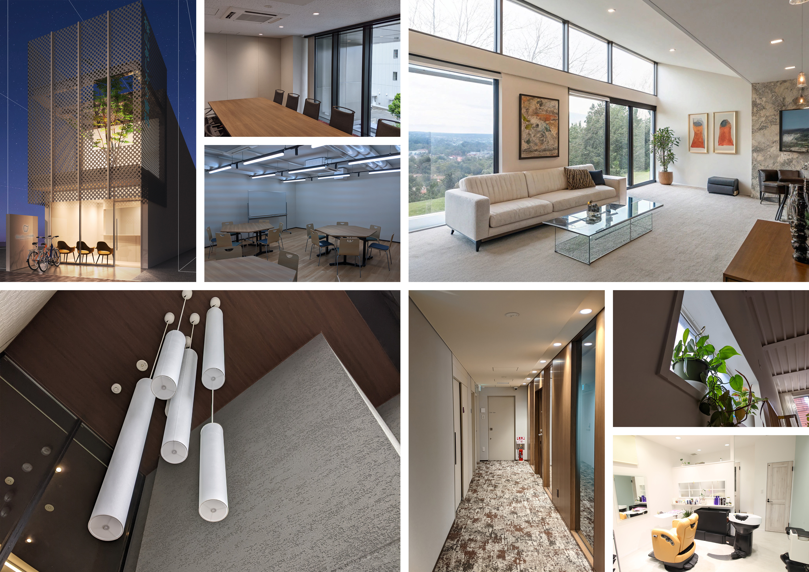
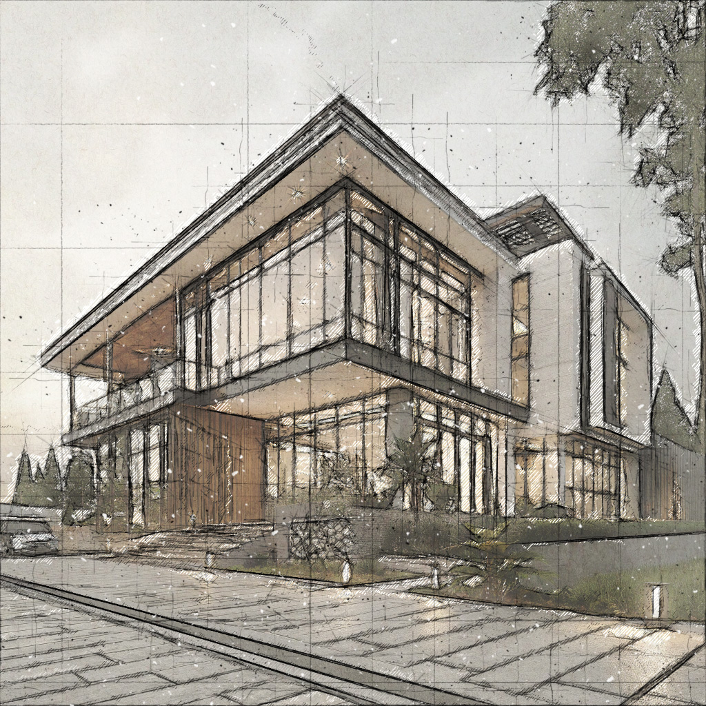
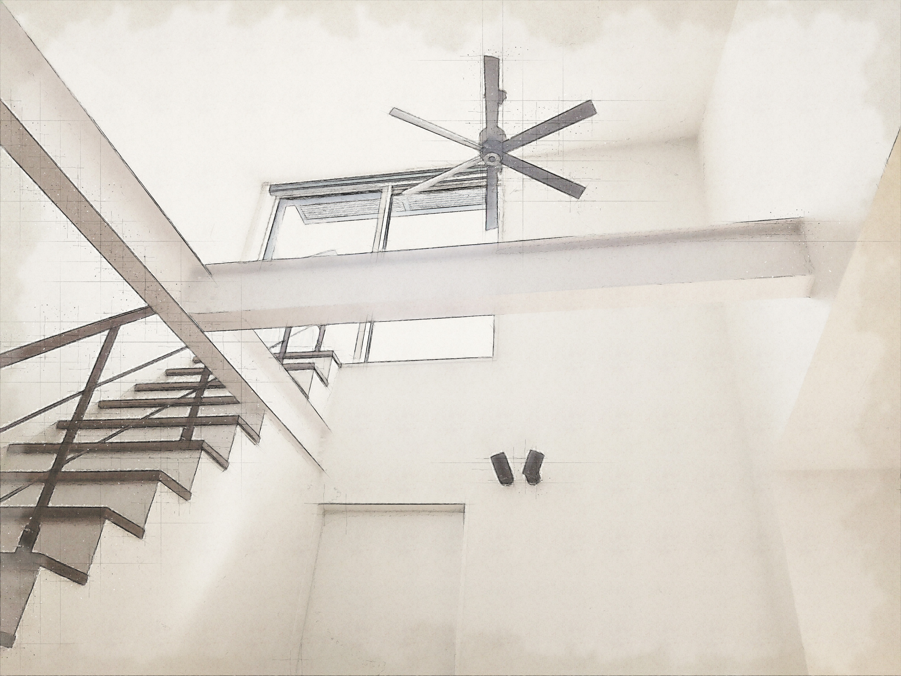
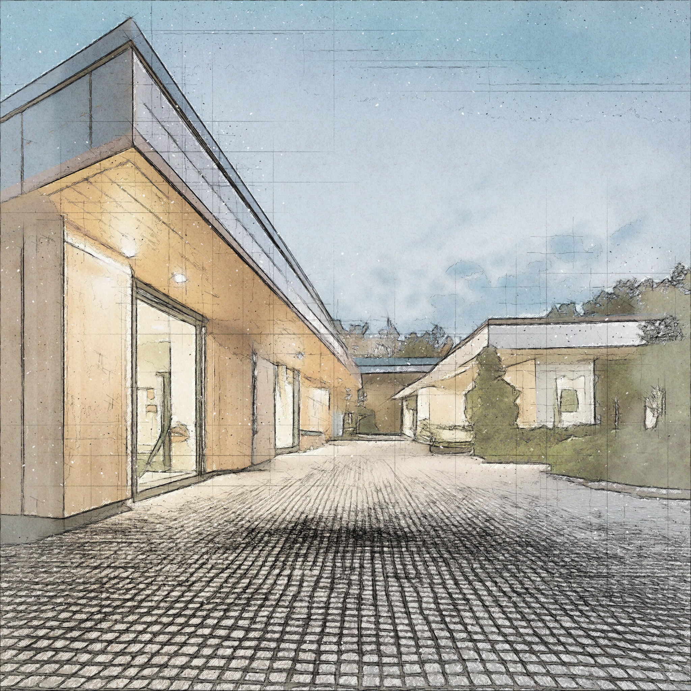
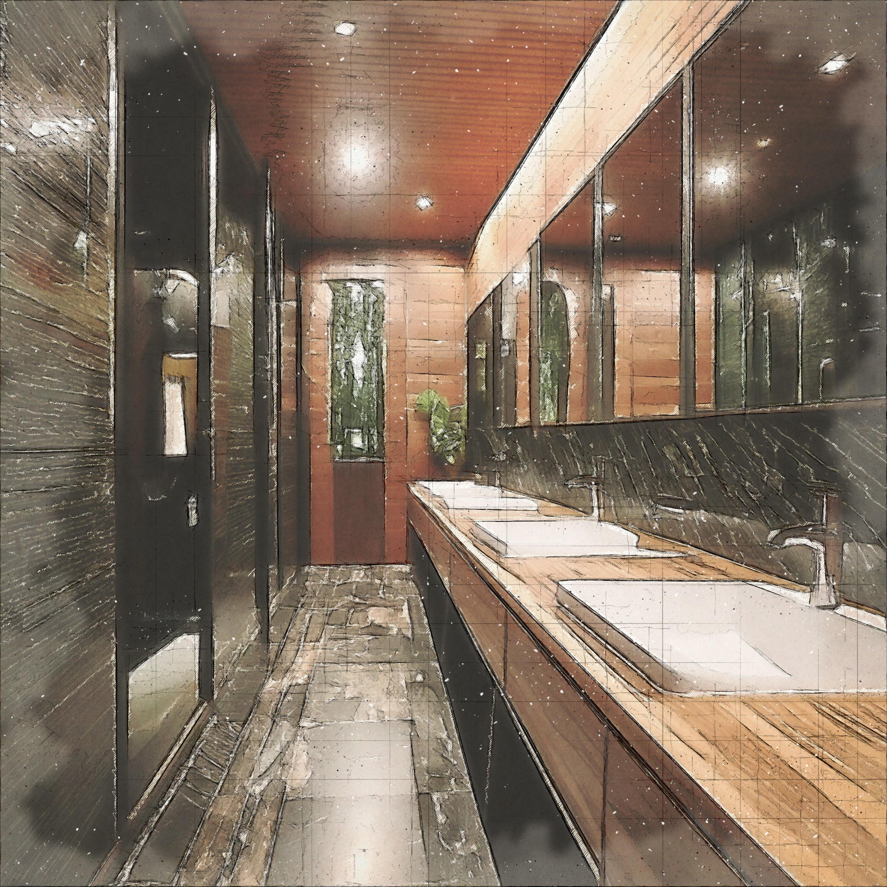

文山建築設計事務所がこれまでに手がけた建築プロジェクトをご紹介します。
住宅から商業施設、公共建築まで、多岐にわたる分野での実績をご覧いただけます。

民間プロジェクト
オフィス・商業施設・店舗など ｜ 累積7件

公共プロジェクト
庁舎・施設・保育所など ｜ 累積13件

調査プロジェクト
環境調査・建物診断など ｜ 累積15件
オフィス

枚方信用金庫くずは支店
地域最大の金融機関の重要な旗艦店。駅前ロータリーからの人の流れをに沿ったエントランスと、吹き抜きのペンダント照明が特徴的な店舗です。
プロジェクト詳細
構造：
RC造3階（13階建集合住宅の低層部）
延床面積：
200㎡
商業施設

ヘアサロン Macherie Ange
都市の中にある癒しと美容を提供するオアシスのような店舗です。フェミニンとクールが共存する間接照明の演出を取り入れた空間を創出。お客様にとって居心地の良い空間を実現しました。
プロジェクト詳細
構造：
木造
延床面積：
30㎡
公共建築

水処理センター周辺施設
地域住民の交流拠点として機能する多目的施設。バリアフリー設計により、あらゆる世代の方々が利用しやすい空間を実現しました。
プロジェクト詳細
構造：
RC造3階・鉄骨造
延床面積：
850㎡
住宅

NAGAREMACHI-HOUSE
敷地の高低差を活かし、各階から異なる景色を楽しめる住宅。省エネルギー性能にも配慮した環境に優しい設計が特徴です。
プロジェクト詳細
構造：
鉄骨造3階
延床面積：
145㎡
リノベーション

阿南市古民家再生プロジェクト
築80年の古民家を現代的な住宅にリノベーション。伝統的な梁や柱を活かしながら、現代の生活スタイルに合わせた機能的な空間を創出しました。
プロジェクト詳細
構造：
木造平屋建
延床面積：
180㎡
商業施設

植物園トイレ設計
植物園の施設の中のトイレとして癒しを感じるニュートラルな空間。豪華な壁と陶器を使用し、エレガントと落ち着きのある空間を演出しています。
プロジェクト詳細
構造：
RC造
延床面積：
40㎡